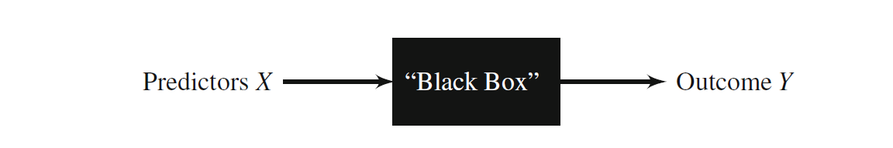
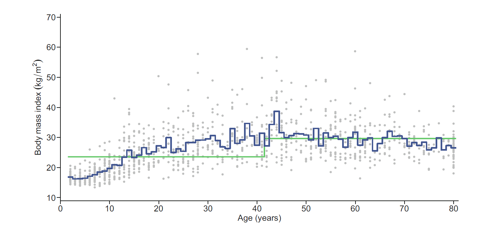
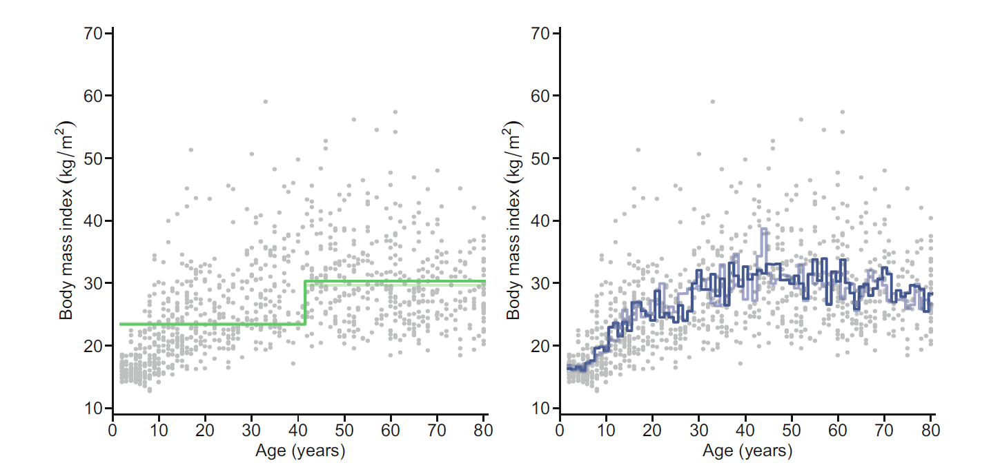
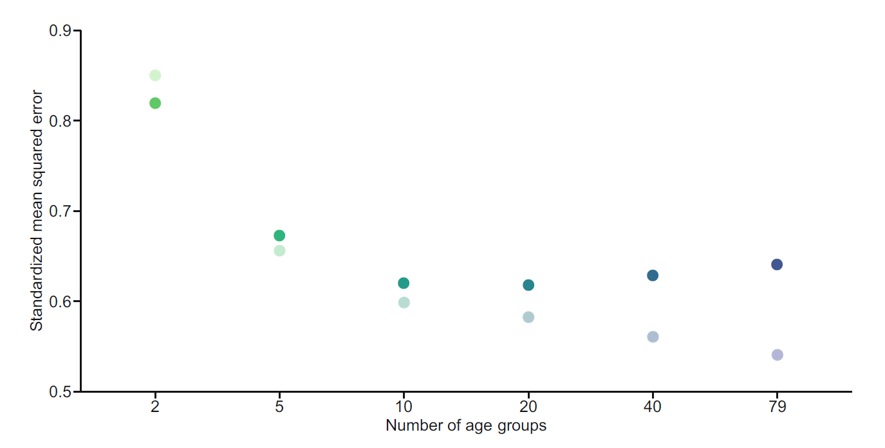
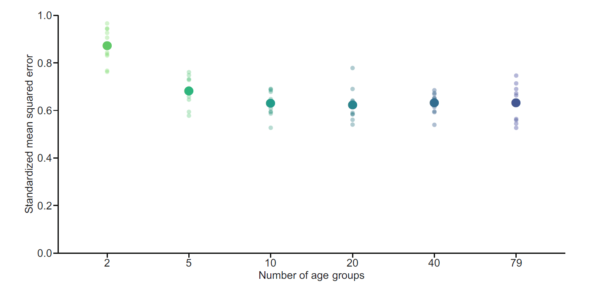
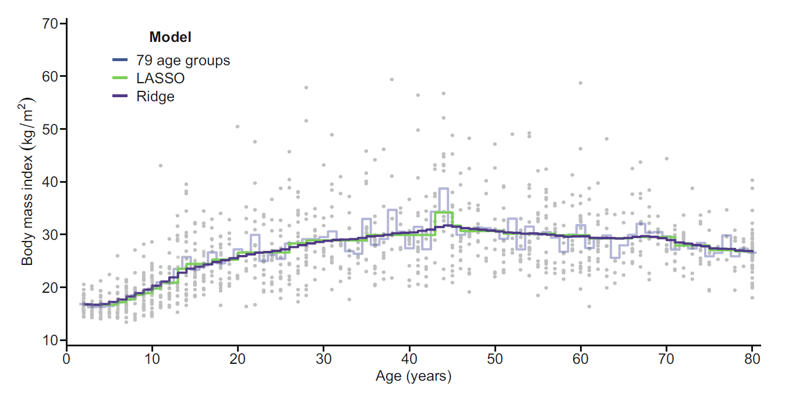
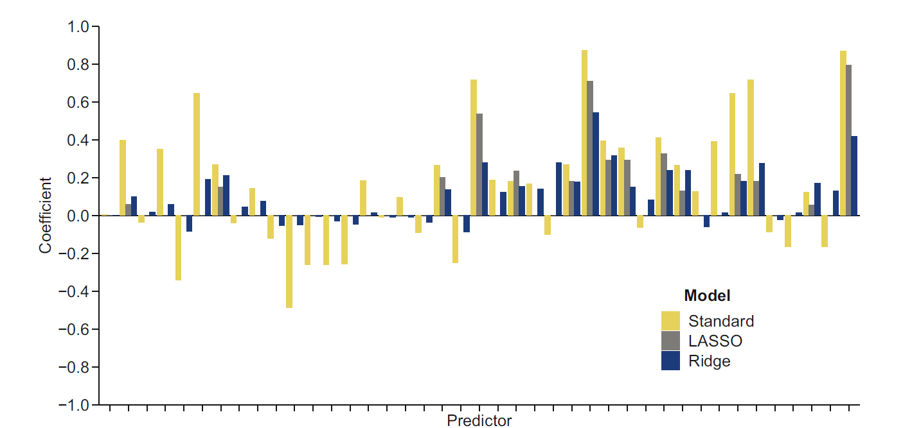
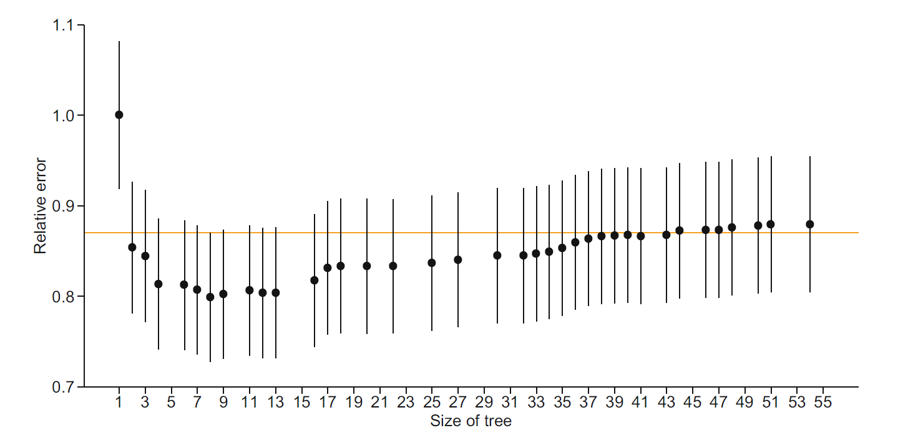
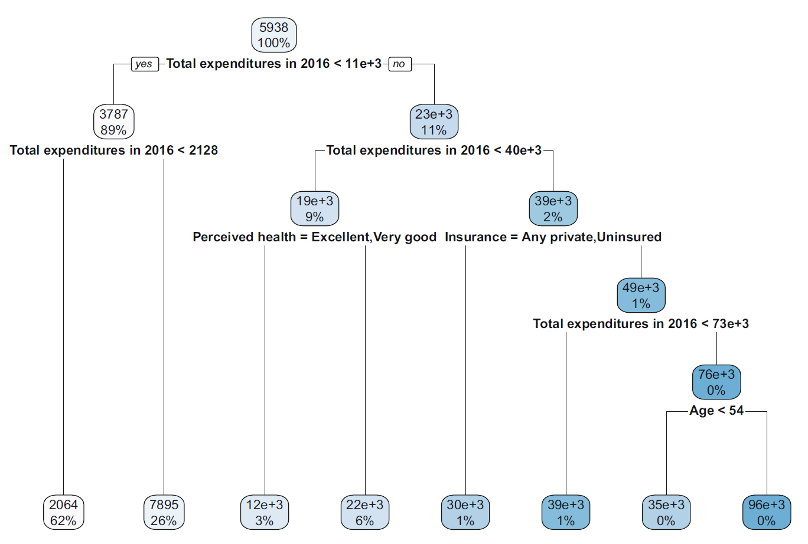
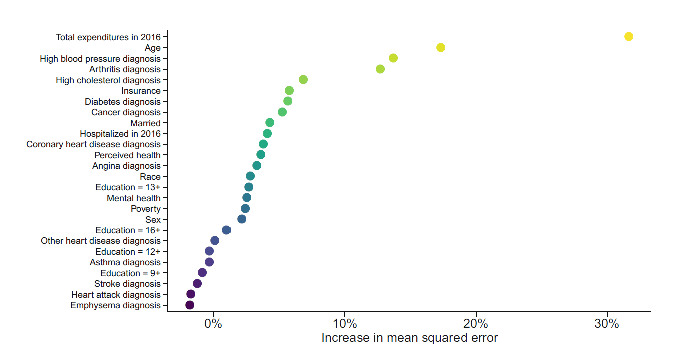

보건의료 데이터 분석의 목적은 크게 설명(explanation)과 예측(prediction)으로 나눌 수 있다. 설명을 위한 분석은 결과가 발생하는 기전과 변수 사이의 관계를 밝히는 데 초점을 둔다. 연구자는 임상적 또는 역학적 개념모형을 설정하고, 교란변수와 매개변수를 구분하며, 회귀계수와 신뢰구간을 이용하여 가설을 검정한다.
예측을 위한 분석의 질문은 다르다. 예측에서는 새로운 환자에게서 아직 관찰되지 않은 결과를 얼마나 정확하게 추정할 수 있는지가 핵심이다. 예를 들어 다음은 모두 예측 문제이다.
향후 1년 이내 입원할 환자는 누구인가?
암 치료 후 재발 위험이 높은 환자는 누구인가?
다음 해 의료비는 어느 정도가 될 것인가?
중환자실에서 상태가 악화할 가능성이 큰 환자는 누구인가?
설명모형에서는 변수의 임상적 의미와 계수의 해석 가능성이 중요하지만, 예측모형에서는 독립된 자료에서의 예측오차가 가장 중요한 평가 기준이다. 예측변수 \(X\)가 결과 \(Y\)를 생성하는 기전을 완전히 이해하지 못하더라도, \(X\)로부터 \(Y\)를 안정적으로 예측할 수 있다면 유용한 예측 알고리즘이 될 수 있다. 다만 예측모형이 학습한 관계는 자료가 수집된 환경에 의존한다. 진료지침, 검사장비, 환자구성 또는 결과 측정방식이 달라지면 같은 알고리즘의 성능도 달라질 수 있다. 따라서 예측은 단순히 함수를 적합하는 문제가 아니라, 어떤 대상자에게 어느 시점의 결과를 예측할 것인지를 먼저 정의하는 문제이다.
10.1.1 예측대상과 손실함수
예측모형의 수학적 대상은 조건부 분포
\[
F_{Y\mid X}(y\mid x)=P(Y\le y\mid X=x)
\]
이다. 이 조건부 분포 전체를 정확히 추정할 수 있다면 평균, 중앙값, 분위수, 사건확률과 예측구간을 모두 구할 수 있다. 실제 분석에서는 사용 목적에 따라 조건부 분포의 특정 요약량을 예측한다.
예측값은 손실함수(loss function)에 따라 달라진다. 새로운 관측치의 손실을 \(L\{Y,a(X)\}\)라고 할 때 최적 예측함수는
절대손실을 사용하면 조건부 중앙값이 최적이고, 이분형 결과의 로그손실을 사용하면 최적 예측값은 실제 조건부 사건확률 \(P(Y=1\mid X=x)\)이다. 따라서 RMSE, MAE와 로그손실은 단순한 평가수치가 아니라 서로 다른 예측대상을 정의한다.

그림의 검은 상자는 예측함수 \(\hat f\)를 나타낸다. 입력변수에서 결과로 이어지는 생물학적 경로를 모두 해석하지 않더라도 예측은 가능하지만, 상자에 들어가는 변수는 반드시 예측시점에 이용 가능해야 한다. 결과가 발생한 뒤에만 알 수 있는 정보가 입력에 포함되면 자료 누출(data leakage)이 발생하여 실제 적용 성능이 크게 과장된다.
전통적 회귀모형은 자료생성기전을 명시적으로 표현하려는 모형 중심 문화(models culture)에 가깝다. 반면 기계학습 알고리즘은 예측변수와 결과 사이의 복잡한 함수를 자료에서 직접 학습하는 알고리즘 중심 문화(algorithms culture)에 가깝다. 두 접근은 서로 배타적이지 않다. 선형회귀나 로지스틱 회귀도 예측에 사용할 수 있고, 기계학습 알고리즘의 결과도 변수 중요도나 부분의존도와 같은 도구로 해석할 수 있다. 그러나 분석의 일차 목적이 설명인지 예측인지에 따라 모형 구축과 평가 방식은 달라져야 한다.
10.1.2 설명모형과 예측모형의 차이
구분
설명 중심 분석
예측 중심 분석
주요 질문
어떤 요인이 결과와 관련되는가?
새로운 대상자의 결과를 얼마나 정확히 예측하는가?
중심 대상
회귀계수, 효과크기, 신뢰구간
예측값, 예측오차, 판별력과 보정도
변수 선택
이론, 선행연구, 인과구조
검증자료에서의 예측성능
모형 복잡도
해석 가능성과 가정의 타당성 중시
일반화오차를 최소화하도록 조정
최종 평가자료
전체 표본 또는 추론 표본
학습에 사용하지 않은 독립 평가자료
과적합의 영향
계수와 표준오차 왜곡
새로운 자료에서 예측성능 저하
단계적 변수선택(stepwise selection)은 자동화된 회귀모형 구축의 오래된 예이다. 그러나 동일 자료에서 변수를 선택하고 계수의 유의성을 다시 평가하면 다중비교와 선택편향으로 인해 회귀계수는 과장되고 표준오차는 과소평가될 수 있다. 예측이 목적이라면 선택된 모형의 성능을 독립된 자료나 교차검증으로 평가해야 한다.
10.1.3 인과변수와 예측변수
좋은 예측변수가 반드시 결과의 원인은 아니다. 예를 들어 특정 검사가 중증도를 반영한다면 결과를 잘 예측할 수 있지만, 그 검사를 변화시킨다고 결과가 개선된다는 뜻은 아니다. 반대로 강한 인과효과를 갖는 변수라도 측정오차가 크거나 대상자 간 변이가 작으면 개인 수준 예측에는 크게 기여하지 않을 수 있다.
예측모형의 변수 선택에서는 다음 세 시점을 구분해야 한다.
예측시점(index time): 예측값을 산출하는 시점
예측기간(prediction horizon): 결과를 관찰할 미래 구간
변수 측정창(look-back window): 예측변수를 구성하는 과거 구간
예측기간 중에 측정된 처치, 검사결과 또는 진단코드를 예측변수로 사용하면 미래 정보가 학습자료에 유입된다. 한 환자의 반복기록이 학습자료와 평가자료에 동시에 포함되는 경우에도 환자 특성이 공유되어 성능이 과대평가될 수 있다. 따라서 자료 분할은 관측행이 아니라 예측이 실제 적용될 단위에서 수행해야 한다.
10.2 과적합과 편향-분산 상충
10.2.1 과적합
과적합(overfitting)은 학습자료의 체계적 신호뿐 아니라 우연한 잡음까지 모형이 학습하는 현상이다. 지나치게 복잡한 모형은 학습자료에서는 매우 작은 오차를 보이지만 새로운 자료에서는 오차가 커질 수 있다.
체질량지수(BMI)를 연령으로 예측한다고 하자. 연령을 두 구간으로 나눈 모형은 지나치게 단순하여 연령에 따른 BMI의 비선형 변화를 충분히 포착하지 못한다. 반대로 연령을 79개의 한 살 단위 구간으로 나누면 각 구간의 표본수가 작아져 예측곡선이 불규칙해진다.

왼쪽과 오른쪽 모형의 차이는 단순한 곡선 모양의 차이가 아니다. 구간 수가 적으면 서로 다른 연령의 대상자에게 거의 같은 값을 부여하여 체계적 패턴을 놓치고, 구간 수가 지나치게 많으면 각 구간 평균이 소수 관측치에 의존하여 크게 흔들린다. 모형 복잡도는 예측함수가 자료의 국소적 변동을 얼마나 따라가는지를 결정한다.
같은 복잡한 모형을 독립된 자료에 적용하면 학습자료에서 보였던 불규칙성이 재현되지 않는다. 이는 학습자료의 우연한 변동을 신호로 오인했기 때문이다.

학습자료와 평가자료의 곡선 차이는 과적합의 직접적인 시각화이다. 특정 연령에서 학습자료의 평균이 우연히 높았기 때문에 만들어진 굴곡은 독립 자료에서 같은 방향으로 나타날 이유가 없다. 평가자료의 오차는 이러한 비재현성까지 포함하므로 학습오차보다 실제 적용성능에 가깝다.
10.2.2 낙관적 편향과 유효 자유도
학습자료는 모형을 선택하는 데 사용되었기 때문에 같은 자료에서 계산한 오차는 구조적으로 작다. 이를 낙관적 편향(optimism)이라고 한다. 선형 평활모형에서 적합값을
\[
\widehat{\mathbf y}=\mathbf S\mathbf y
\]
로 표현할 수 있을 때 \(\operatorname{tr}(\mathbf S)\)를 유효 자유도(effective degrees of freedom)라고 한다. 오차분산이 \(\sigma^2\)인 단순한 조건에서는 평균 학습오차의 낙관성 크기가 대략
첫째 항 \(\sigma^2\)는 결과 자체의 불가약 오차(irreducible error)이다. 둘째 항은 예측함수의 편향 제곱이고, 셋째 항은 학습표본이 달라질 때 예측값이 변하는 정도인 분산이다. 여기서 기댓값과 분산은 동일한 모집단에서 학습표본을 반복하여 추출한다고 가정할 때의 변동을 의미한다.
분해식은 \(Y=f(x_0)+\varepsilon\)와 \(E(\varepsilon\mid X)=0\)을 이용하면 얻을 수 있다.
교차항이 사라지는 이유는 새로운 관측치의 오차가 학습자료와 독립이고 평균이 0이기 때문이다. 이 분해는 제곱손실에서 성립하며, 분류오차나 절대손실에서는 같은 형태로 정확히 분해되지 않는다.
단순한 모형은 일반적으로 편향이 크고 분산이 작다. 복잡한 모형은 편향이 작지만 분산이 커질 수 있다. 예측모형의 복잡도는 두 요소 사이의 균형을 이루도록 선택해야 한다.

그림에서 학습오차는 복잡도가 증가할수록 계속 감소하지만 평가오차는 어느 지점 이후 다시 증가한다. 평가오차가 최소가 되는 지점은 편향을 더 줄여 얻는 이득과 추정분산 증가로 인한 손실이 균형을 이루는 복잡도이다. 이 위치는 자료마다 달라지므로 교차검증과 같은 재표본추출 절차로 추정해야 한다.
10.3 예측자료의 분할
10.3.1 학습자료와 평가자료
예측모형은 일반적으로 자료를 학습자료(training data)와 평가자료(test data)로 나누어 개발한다.
학습자료에서 모형의 계수와 복잡도 조정모수를 추정한다.
모형 구축이 완료된 뒤 평가자료에 적용한다.
평가자료의 실제 결과와 예측값을 비교하여 최종 성능을 산출한다.
평가자료는 모형 적합, 변수 선택, 조정모수 선택에 사용해서는 안 된다. 평가자료를 반복적으로 확인하면서 모형을 수정하면 평가자료가 사실상 학습자료의 일부가 되어 성능이 낙관적으로 추정된다.
엄밀히는 자료를 세 역할로 구분할 수 있다. 학습자료는 계수 추정에, 검증자료(validation data)는 조정모수와 모형 선택에, 평가자료는 최종 성능평가에 사용한다. 표본이 충분하지 않다면 검증자료의 역할을 교차검증이 대신하고, 별도의 평가자료는 마지막에 한 번만 사용한다. 전처리도 이 구분에 포함된다. 결측치 대치, 표준화, 변수선택, 특징생성과 차원축소는 각 학습분할 안에서 추정한 뒤 해당 검증분할에 적용해야 한다. 전체 자료에서 먼저 전처리하면 결과변수를 직접 사용하지 않았더라도 정보가 섞일 수 있다.
자료 분할 비율은 표본크기와 사건 수에 따라 달라진다. 충분히 큰 자료에서는 70:30 또는 80:20 분할이 흔히 사용된다. 표본이 작거나 사건이 드문 경우에는 단순 분할이 불안정할 수 있으므로 반복 교차검증이나 중첩 교차검증을 고려해야 한다. 분할비율보다 중요한 것은 각 분할에 충분한 사건과 예측변수 변이가 남는지 확인하는 것이다.
10.3.2 독립성 구조를 반영한 분할
무작위 행 단위 분할은 관측치가 독립이고 동일한 분포에서 추출되었다는 가정에 가깝다. 실제 보건의료 자료에서는 다음과 같은 분할이 더 적절할 수 있다.
반복측정 자료: 환자 단위 분할
다기관 자료: 기관 단위 분할 또는 기관 외부검증
시간 순서가 있는 자료: 과거 자료로 학습하고 미래 자료로 평가
가족 또는 지역 군집자료: 군집 단위 분할
이 원칙을 지키지 않으면 동일 환자의 고유한 패턴이나 동일 기관의 기록관행이 양쪽 자료에 공유되어 일반화성능이 과장된다.
10.3.3 층화 분할
이분형 결과에서 사건이 드문 경우 무작위 분할만 사용하면 학습자료나 평가자료의 사건비율이 크게 달라질 수 있다. 층화 분할(stratified split)은 결과 범주별로 표본을 나누어 두 자료에서 사건비율을 유사하게 유지한다.
층화 분할은 사건비율을 유사하게 유지하지만 연령, 기관, 추적시점 또는 다른 중요 예측변수의 분포까지 같게 만드는 것은 아니다. 평가자료는 학습자료와 완전히 같아야 하는 자료가 아니라, 실제 적용대상을 대표해야 하는 자료이다. 따라서 분할 후에는 사건 수뿐 아니라 주요 예측변수의 범위와 결측률도 함께 확인한다.
10.4 예측성능 평가
10.4.1 연속형 결과
관측값 \(y_i\)와 예측값 \(\hat y_i\)의 차이를 잔차 또는 예측오차라 한다.
이며 이상치의 영향을 MSE보다 적게 받는다. 제곱손실은 큰 오차를 제곱하여 강조하므로 조건부 평균을 목표로 하고, 절대손실은 선형적으로 벌점을 부과하므로 조건부 중앙값을 목표로 한다. 비용자료처럼 오른쪽 꼬리가 긴 결과에서는 RMSE와 MAE가 서로 다른 임상적 질문에 답할 수 있다. 예측오차의 방향을 확인하려면 평균오차
ROC 곡선은 모든 임계값에서 민감도와 \(1-\)특이도를 표시한다. ROC 곡선 아래 면적(AUC)은 임의로 선택한 사건 대상자의 예측확률이 비사건 대상자의 예측확률보다 클 확률로 해석할 수 있다. AUC는 예측확률의 순서만 사용하므로 모든 확률에 단조변환을 적용해도 변하지 않는다. 따라서 사건위험을 체계적으로 두 배 과대예측해도 순위가 유지되면 AUC는 높을 수 있다.
양성예측도는 사건 유병률 \(\pi=P(Y=1)\)에 의존한다. 민감도 \(Se\)와 특이도 \(Sp\)가 주어졌을 때
을 적합한다. \(\beta<1\)은 예측값이 지나치게 극단적이라는 신호이며 과적합과 관련될 수 있다. 반대로 \(\beta>1\)은 예측값의 범위가 충분히 넓지 않아 위험 차이를 과소표현하는 상태와 관련될 수 있다.
판별력과 보정도는 서로 대체할 수 없다. AUC가 높은 모형도 절대위험을 잘못 예측할 수 있고, 모든 환자에게 비슷한 위험을 주는 모형은 평균 사건률에 잘 맞더라도 판별력이 낮다. 임상적 의사결정에서는 두 속성에 더해 예측값을 사용했을 때의 이득과 손실을 평가해야 한다.
10.4.4 임계값과 임상적 유용성
위양성 비용을 \(C_{FP}\), 위음성 비용을 \(C_{FN}\)이라고 하면, 완전히 알려진 비용구조에서 사건으로 분류할 최적 확률임계값은
\[
c^*=\frac{C_{FP}}{C_{FP}+C_{FN}}
\]
이다. 위음성의 손실이 매우 크면 임계값은 낮아져 민감도를 우선하게 된다. 실제 의료의사결정에서는 비용뿐 아니라 치료효과, 부작용과 환자선호도도 포함해야 한다.
일반적으로 \(K=5\) 또는 \(K=10\)을 많이 사용한다. \(K\)가 작으면 계산량은 적지만 학습자료가 줄어 편향이 커질 수 있다. \(K=n\)인 leave-one-out cross-validation은 각 반복에서 한 관측치만 제외하므로 편향은 작지만 계산량과 분산이 커질 수 있다.

그림에서 각 관측치는 정확히 한 번 검증자료가 되고 나머지 반복에서는 학습자료에 포함된다. 따라서 모든 관측치에 학습외 예측값(out-of-fold prediction)이 하나씩 생성된다. 이 예측값을 모으면 학습자료 전체에 대한 내부검증 성능과 보정곡선을 계산할 수 있다. 다만 서로 다른 겹의 예측값은 서로 다른 모형에서 생성되었으므로 하나의 최종모형 예측값과 동일하지는 않다.
교차검증에서 가장 흔한 오류는 전체 자료에서 전처리와 변수선택을 완료한 뒤 겹만 나누는 것이다. 올바른 절차에서는 각 반복의 학습부분에서 대치, 표준화, 특징선택과 조정모수 탐색을 모두 수행하고 그 결과를 제외된 겹에 적용한다.
10.5.2 반복 교차검증
한 번의 \(K\)-겹 분할 결과는 우연한 자료분할에 영향을 받는다. 반복 교차검증은 서로 다른 무작위 분할로 \(K\)-겹 교차검증을 여러 번 수행하고 성능의 평균과 분포를 요약한다. 반복에서 얻은 성능값들은 같은 관측치를 재사용하므로 서로 독립이 아니다. 따라서 단순히 반복값의 표준편차를 \(\sqrt{R}\)로 나누어 일반적인 표준오차로 해석해서는 안 된다. 반복 교차검증의 주된 목적은 자료분할에 대한 민감도를 확인하고 평균 성능을 안정화하는 것이다.
시간자료에서는 무작위 겹보다 과거에서 미래로 이동하는 순방향 검증이 적절하다. 군집자료에서는 같은 환자나 기관의 관측치가 서로 다른 겹에 나뉘지 않도록 grouped cross-validation을 사용한다.
10.5.3 중첩 교차검증
예측모형의 성능을 편향 없이 평가하려면 조정모수 선택과 성능 평가를 분리해야 한다. 중첩 교차검증(nested cross-validation)은 외부 겹에서 평가자료를 정하고, 각 외부 학습자료 안에서 다시 내부 교차검증을 수행하여 조정모수를 선택한다.
외부 반복마다 다음 절차가 수행된다.
외부 학습자료와 외부 평가자료를 분리한다.
외부 학습자료 안에서 내부 교차검증으로 최적 조정모수를 선택한다.
선택된 조정모수로 외부 학습자료 전체에서 모형을 다시 적합한다.
외부 평가자료에서 예측성능을 계산한다.
표본이 작거나 변수 선택과 조정모수 탐색이 복잡할수록 중첩 교차검증이 중요하다. 내부 교차검증에서 가장 높은 성능을 보인 조정모수 자체는 선택의 혜택을 받으므로, 그 내부 성능값을 최종 성능으로 보고하면 낙관적이다. 외부 겹은 조정모수 선택과 완전히 분리되어 이 선택 편향을 평가한다.
중첩 교차검증의 외부 성능은 여러 외부모형의 평균 성능이다. 실제 배포모형은 모든 개발자료에서 내부 절차로 조정모수를 다시 선택한 뒤 적합한다. 따라서 외부 교차검증은 배포모형의 계수를 제공하는 절차가 아니라, 동일한 개발 알고리즘이 새로운 표본에서 보일 성능을 추정하는 절차이다.
set.seed(2026)K <-5Lfold_id <-integer(nrow(train_dat))# 사건 범주 안에서 겹을 배정하여 각 겹의 사건비율을 안정화한다.for (g insort(unique(train_dat$hospitalized))) { idx <-which(train_dat$hospitalized == g) fold_id[idx] <-sample(rep(seq_len(K), length.out =length(idx)))}cv_brier <-numeric(K)for (k inseq_len(K)) { fit_k <-glm( hospitalized ~ age + sex + bmi + hypertension +log1p(prior_cost),family =binomial(),data = train_dat[fold_id != k, , drop =FALSE] ) p_k <-predict( fit_k,newdata = train_dat[fold_id == k, , drop =FALSE],type ="response" ) y_k <- train_dat$hospitalized[fold_id == k] cv_brier[k] <-mean((y_k - p_k)^2)}mean(cv_brier)
[1] 0.09741955
10.6 규제회귀
변수의 수가 많거나 예측변수 사이의 상관이 높으면 표준 회귀계수의 분산이 커지고 모형이 불안정해질 수 있다. 규제회귀(regularized regression)는 적합오차에 회귀계수의 크기에 대한 벌점항을 추가하여 계수를 축소한다. 계수에 약간의 편향을 도입하는 대신 분산을 더 크게 줄일 수 있다면 전체 예측오차는 감소한다. 이는 편향-분산 상충을 직접 이용하는 방법이다.
여기서 \(\alpha=1\)이면 LASSO, \(\alpha=0\)이면 릿지 회귀이다. 상관된 예측변수가 여러 개 있을 때 elastic net은 LASSO보다 안정적으로 변수군을 유지할 수 있다. \(\lambda\)는 전체 축소의 강도를, \(\alpha\)는 \(L_1\)과 \(L_2\) 벌점의 상대적 비중을 결정하므로 두 조정모수 모두 재표본추출 절차 안에서 선택해야 한다.
규제회귀에서는 변수의 측정단위가 벌점에 영향을 주므로 일반적으로 예측변수를 표준화한다.
\[
z_{ij}
=
\frac{x_{ij}-\bar x_j}{s_j}.
\]
절편은 대개 벌점에서 제외한다. 최적 \(\lambda\)는 교차검증으로 선택한다. 최소 교차검증오차를 주는 lambda.min은 예측성능을 우선하고, 최소오차의 1 표준오차 범위 안에서 가장 큰 벌점을 선택하는 lambda.1se는 더 단순하고 강하게 축소된 모형을 제공한다. 두 선택의 차이는 단순성, 안정성과 예측오차 사이의 판단이다.

그림에서 벌점이 증가하면 복잡한 곡선의 굴곡이 완화된다. 규제는 모든 형태를 동일하게 단순화하는 것이 아니라, 자료가 약하게 지지하는 고변동 성분을 더 크게 축소한다.

계수경로 그림은 \(\lambda\)가 커질 때 각 표준화 계수가 0으로 수축되는 과정을 보여준다. LASSO에서는 일부 경로가 정확히 0에 도달하므로 선택된 변수 집합이 \(\lambda\)에 따라 달라진다. 상관된 변수의 경로가 교차하거나 불안정하게 움직이면 선택 자체의 불확실성이 크다는 신호이다.
if (requireNamespace("glmnet", quietly =TRUE)) { x_train <-model.matrix( hospitalized ~ age + sex + bmi + hypertension +log1p(prior_cost),data = train_dat )[, -1, drop =FALSE] x_test <-model.matrix( hospitalized ~ age + sex + bmi + hypertension +log1p(prior_cost),data = test_dat )[, -1, drop =FALSE] y_train <- train_dat$hospitalizedset.seed(2026) cv_lasso <- glmnet::cv.glmnet(x = x_train,y = y_train,family ="binomial",alpha =1,nfolds =5,type.measure ="deviance" ) p_lasso <-as.numeric(predict(cv_lasso, newx = x_test, s ="lambda.min", type ="response") )c(lambda_min = cv_lasso$lambda.min,test_brier =mean((test_dat$hospitalized - p_lasso)^2) )} else {message("glmnet 패키지가 설치되지 않아 규제회귀 예제를 실행하지 않았습니다.")}
lambda_min test_brier
0.0006846786 0.0961066076
10.7 회귀나무와 분류나무
10.7.1 재귀적 이분할
의사결정나무(tree)는 예측변수 공간을 반복적으로 둘로 나누어 비슷한 결과를 가진 관측치를 같은 말단노드에 배치한다. 연속형 결과를 예측하면 회귀나무(regression tree), 범주형 결과를 예측하면 분류나무(classification tree)라고 한다.
이 과정을 각 하위영역에서 반복하는 것이 재귀적 이분할(recursive binary splitting)이다. 각 단계는 현재 노드에서 가장 큰 즉시 오차감소를 주는 분할을 선택하는 탐욕적 알고리즘이다. 초기에 선택한 분할을 이후 단계에서 되돌리지 않으므로 전체 가능한 나무 중 전역 최적해를 보장하지는 않는다.
분할 \((j,s)\)의 개선량은 부모노드 오차에서 두 자식노드 오차를 뺀 값으로 표현할 수 있다.
\(|T|\)는 말단노드 수이고 \(\alpha\)는 복잡도 벌점이다. 교차검증으로 \(\alpha\)를 선택하면 예측오차와 나무 크기 사이의 균형을 정할 수 있다.

나무 크기가 증가하면 학습오차는 감소하지만 교차검증오차는 일정 지점 이후 증가할 수 있다. 가지치기는 큰 나무를 먼저 만든 뒤, 교차검증으로 선택한 복잡도에 맞추어 약한 분할부터 제거한다. 이 방식은 초기에 성장을 너무 일찍 멈추어 중요한 후속 분할을 놓치는 위험을 줄인다.
10.7.3 회귀나무
의료비를 예측하는 회귀나무는 이전 연도의 총의료비, 연령, 주관적 건강상태와 보험상태 같은 변수를 순차적으로 분할할 수 있다. 나무는 비선형성과 변수 사이의 상호작용을 자동으로 표현한다.

의료비 나무에서 말단노드 평균은 오른쪽 꼬리와 극단비용의 영향을 크게 받을 수 있다. 최소 말단노드 크기를 충분히 확보하고, 필요하면 감마 이탈도나 절대오차와 같이 결과분포에 더 적합한 손실함수를 고려한다.
10.7.4 분류나무
분류나무에서는 각 노드의 사건비율을 예측확률로 사용할 수 있다. 노드 \(m\)에서 범주 \(k\)의 비율은
\(B\)를 늘리면 두 번째 항은 감소하지만 상관에 의한 첫 번째 항은 남는다. 따라서 나무 수를 늘리는 것만으로는 충분하지 않고, 개별 나무 사이의 상관을 낮추는 것이 중요하다.
10.8.2 랜덤 포레스트
배깅한 나무들은 강한 예측변수가 모든 나무의 상단 분할에 반복적으로 선택되면 서로 높은 상관을 가질 수 있다. 랜덤 포레스트(random forest)는 각 분할에서 전체 \(p\)개 예측변수를 모두 검토하지 않고 무작위로 선택한 \(m\)개 변수만 후보로 사용한다.
알고리즘은 다음과 같다.
원자료에서 크기 \(n\)의 부트스트랩 표본을 \(B\)개 생성한다.
각 부트스트랩 표본에서 큰 나무를 성장시킨다.
각 노드의 분할마다 \(p\)개 변수 중 \(m\)개를 무작위로 선택한다.
선택된 \(m\)개 변수 중 최적 분할을 찾는다.
회귀에서는 나무 예측값의 평균, 분류에서는 확률 평균이나 다수결을 사용한다.
분류에서는 흔히 \(m\approx\sqrt p\), 회귀에서는 \(m\approx p/3\)을 초기값으로 사용한다. 그러나 최종 값은 교차검증이나 out-of-bag 오차로 조정하는 것이 좋다.
10.8.3 Out-of-bag 평가
각 부트스트랩 표본에는 원자료 관측치의 약 63.2%가 적어도 한 번 포함된다. 나머지 약 36.8%는 해당 나무를 적합하는 데 사용되지 않으며 out-of-bag(OOB) 관측치가 된다. 각 관측치는 자신을 포함하지 않은 나무들로 예측할 수 있으므로 별도의 검증자료 없이 내부 예측오차를 계산할 수 있다. OOB 예측은 조정모수 선택과 내부 성능평가에 편리하지만, 같은 개발자료의 반복 재사용에 기반하므로 외부검증을 대체하지는 않는다. OOB 오차를 보면서 변수와 조정모수를 반복적으로 바꾸면 그 오차에도 선택 낙관성이 생길 수 있다.
10.8.4 변수 중요도
순열 중요도(permutation importance)는 OOB 자료에서 특정 예측변수의 값을 무작위로 섞기 전후의 예측오차 차이를 측정한다.
변수 \(X_j\)가 중요하면 값을 섞었을 때 예측성능이 크게 저하된다. 그러나 중요도는 인과효과가 아니며, 상관된 변수들 사이에 중요도가 분산되거나 편향될 수 있다. 한 변수를 섞으면 다른 변수와의 현실적인 상관구조가 깨질 수 있으므로, 강한 상관이 있는 경우 조건부 순열 중요도나 변수군 단위 중요도를 고려할 수 있다.
불순도 감소 기반 중요도는 가능한 분할점이 많은 연속형 변수나 범주 수가 많은 변수에 유리할 수 있다. 순열 중요도는 이러한 편향을 일부 줄이지만 변수 간 대체가능성의 영향을 받는다.

그림의 중요도는 해당 변수가 예측에 사용된 정도를 나타내며 효과의 방향을 보여주지 않는다. 중요도가 높은 변수에 대해 부분의존도, 누적국소효과 또는 개별조건부기대 곡선을 추가하면 평균적인 예측관계의 방향과 비선형성을 살펴볼 수 있다. 다만 이 역시 관찰된 예측관계이지 인과효과는 아니다.
if (requireNamespace("randomForest", quietly =TRUE)) {set.seed(2026) rf_fit <- randomForest::randomForest(factor(hospitalized) ~ age + sex + bmi + hypertension + prior_cost,data = train_dat,ntree =300,importance =TRUE ) rf_prob <-predict(rf_fit, newdata = test_dat, type ="prob")[, "1"]c(oob_error =tail(rf_fit$err.rate[, "OOB"], 1),test_brier =mean((test_dat$hospitalized - rf_prob)^2) )} else {message("randomForest 패키지가 설치되지 않아 랜덤 포레스트 예제를 실행하지 않았습니다.")}
oob_error test_brier
0.1210677 0.1022188
10.9 희귀사건 예측
의료결과에서는 사망, 재입원 또는 중증 합병증처럼 사건률이 낮은 경우가 많다. 희귀사건 자료에서는 정확도가 높더라도 임상적으로 중요한 사건을 거의 탐지하지 못할 수 있다.
희귀사건 예측에서는 다음을 함께 고려한다. 사건 수가 적으면 단순히 비사건 수가 많은 것만으로 복잡한 모형을 안정적으로 학습할 수 없다. 예측정보는 주로 사건과 비사건의 대비에서 나오므로, 전체 표본크기와 함께 사건 수, 후보모수 수와 예측확률의 범위를 확인해야 한다.
희귀사건의 정밀도-재현율 곡선에서 무정보 분류기의 평균 정밀도는 사건률 \(\pi\)이다. 따라서 PR-AUC는 사건률과 함께 해석해야 하며, 서로 다른 모집단의 PR-AUC를 직접 비교할 때에는 기저 사건률 차이를 고려해야 한다.
이다. 그러나 \(F_1\) 점수는 진음성을 반영하지 않으므로 단독으로 사용하지 않는다. 또한 \(F_1\)은 확률예측의 보정도를 평가하지 않으며 선택한 임계값과 사건률에 의존한다.
학습자료에서 사건을 과대표집하거나 비사건을 과소표집하면 표본 내 사건률이 실제 적용 모집단과 달라진다. 조건부 분포 \(P(X\mid Y)\)가 보존되는 단순 사건-대조군 표집에서, 학습표본의 사건률을 \(\pi_s\), 목표 모집단 사건률을 \(\pi\)라고 하면 확률의 절편 보정은
로 표현할 수 있다. 실제로는 표집설계와 모형 오지정 때문에 이 보정만으로 충분하지 않을 수 있으므로, 실제 사건률을 유지한 검증자료에서 재보정한다. 합성표본이나 과소표집은 반드시 학습분할 안에서만 수행해야 한다.
10.10 예측모형의 개발과 보고
보건의료 예측연구에서는 알고리즘의 종류보다 분석설계와 평가의 엄격성이 더 중요하다. 예측모형 개발은 단일 적합식이 아니라 원자료 입력에서 최종 예측값 산출까지의 전체 파이프라인을 정의하는 과정이다. 파이프라인에는 대상자 선정, 시간원점 설정, 결측처리, 변수변환, 변수선택, 조정모수 선택, 모형적합과 확률보정이 모두 포함된다. 내부검증에서는 이 전체 과정을 반복해야 한다.
예측모형을 개발할 때에는 다음 요소를 명시해야 한다.
대상 모집단과 예측시점
결과의 정의와 예측기간
예측시점에 실제로 이용 가능한 변수만 사용했는지 여부
결측자료 처리 방법
자료 분할과 교차검증 방법
변수 선택과 조정모수 결정 과정
최종 평가자료에서의 성능
판별력과 보정도
임계값 선택의 임상적 근거
외부검증 여부
시간의 흐름이 있는 자료에서는 미래 자료가 학습자료에 섞이지 않도록 해야 한다. 여러 병원 자료를 사용하는 경우 한 환자의 기록이 학습자료와 평가자료에 동시에 포함되지 않도록 환자 단위로 분할한다. 기관 간 일반화가 목적이라면 일부 기관 전체를 외부 평가자료로 두는 것이 더 엄격한 검증이 된다.
10.10.1 외부검증과 자료분포 변화
외부자료에서 성능이 달라지는 원인은 하나가 아니다. 예측변수의 분포가 달라지는 공변량 이동(covariate shift), 같은 예측변수에서 사건률이 달라지는 결과발생 이동, 변수와 결과의 관계 자체가 달라지는 개념 이동을 구분할 수 있다.
을 이용한 로지스틱 재보정을 고려한다. 더 큰 변화에서는 일부 계수를 다시 추정하거나 새로운 변수를 포함하는 모형 갱신이 필요하다. 갱신 강도가 커질수록 새로운 자료에서 다시 과적합할 위험도 커진다.
10.10.2 하위집단 성능과 불확실성
전체 성능이 양호해도 연령, 성별, 질환중증도 또는 기관별 보정도가 다를 수 있다. 하위집단 평가에서는 단순히 AUC만 비교하지 않고 사건률, 보정절편, 보정기울기와 임상적으로 사용하는 임계값에서의 오류율을 함께 확인한다. 표본이 작은 하위집단의 성능차이는 변동성이 크므로 신뢰구간 없이 순위만 비교해서는 안 된다.
최종 모형을 배포하기 전에는 학습과 내부검증에서 확정한 분석절차를 그대로 유지하여 외부자료에 적용해야 한다. 외부검증에서 성능이 낮아지면 모집단 차이, 측정방식의 차이, 사건률 변화와 진료환경 변화를 점검한다. 재보정이나 모형 갱신이 필요할 수 있지만, 갱신 후에는 다시 독립 검증이 필요하다. 배포 이후에도 입력변수 분포, 결측률, 사건률과 보정도의 시간적 변화를 관찰해야 한다. 이는 모형을 한 번 완성된 도구가 아니라 변화하는 진료환경 속의 측정시스템으로 다루는 관점이다.